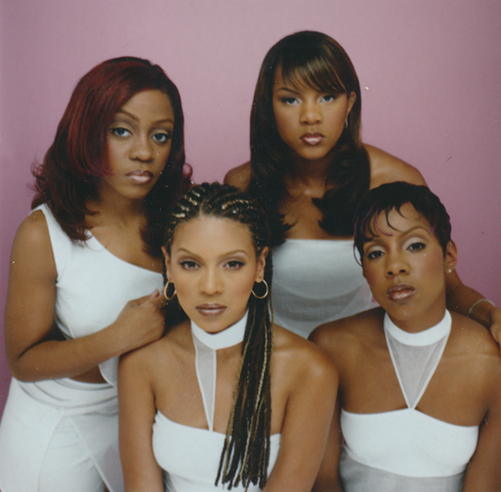
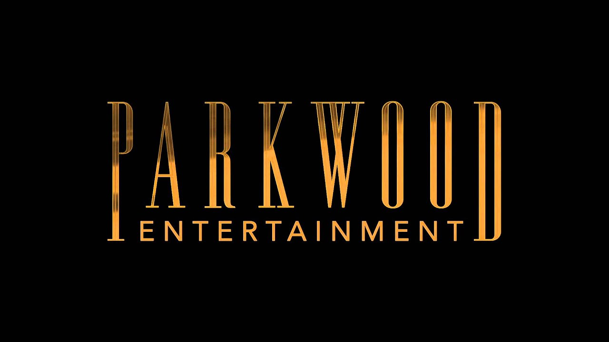
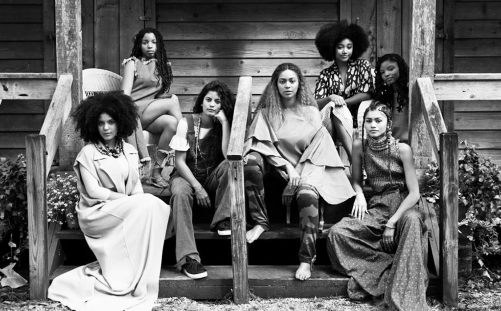
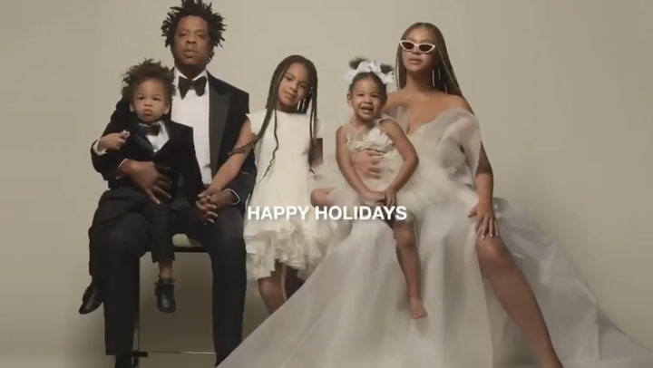

To being a ground-breaking business woman...
Beyoncé has become an inspiration to young black women internationally, and this website is simply an appreciation of her existence.
Beyoncé has become a household name and well-known brand. With a career of over 24 years - stretching back to her days from girl-group Destiny's Child- she has created a legacy that can never be compared to any other.
She has 1357 award nominations and 594 wins under her belt, including:
- a RECORD-BREAKING 29 MTV VMA Awards
- a RECORD-BREAKING 28 Grammy Awards
- Emmy Nominations
- Golden Globe nominations
- and of course, being recognised as the second most-awarded recording artist of all time!

Although all of her work could be notable, her most ground-breaking era (well, according to me) would have to be the Lemonade era. She broke boundaries and challenged the idea of what a normal album should look and sound like. She showed that creativity really has no limits, and producing a body of art of that calibre can be done. She also does not shy away from showing/representing black excellence and history.
Beyoncé has become an inspiration to so many young women all around the world- including myself. Although she faces a lot of backlash, she doesn't let it get her down, and lets her work do all the talking. Take a look at her 2018 Coachella performance -aka Beychella- (which was also a record-breaker as she was the first African American woman to headline the festival ever!). She started preparing for the performance just months after her twins, Sir and Rumi Carter were born. If that is not an example of a woman with a plan then I don't know what is!

Beyoncé Giselle Knowles-Carter is the epitome of breakthakingly beautiful elegance and power. At only 40 years old she has been influential in pop culture & the music industry as a whole, AND tag-teaming the music business with her husband Jay-Z like a boss. As a fan, I cannot wait to see what else she can come up with, and I'm sure it will be better than the last.
 Instagram
InstagramBeyoncé's Website
This website was created by Sinelizwi Dyantyi for Vodacom's #CodeLikeAGirlProject